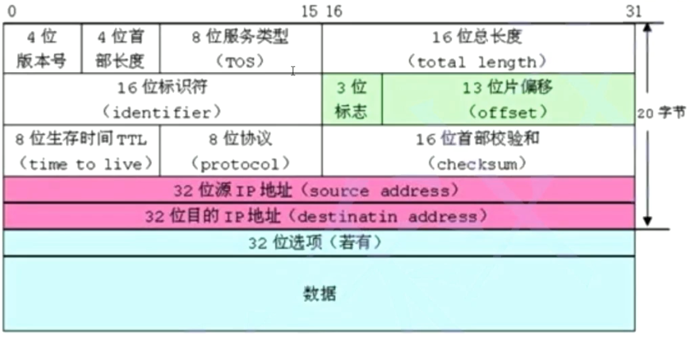

结构体
结构体类型的声明
结构的基础知识
结构是一些值的集合，这些值称为成员变量。结构的每个成员可以是不同类型的变量。
结构体的声明
struct tag
{
member-list;//成员列表
}variable-list
;
//声明一个结构体类型
//声明一个学生类型，是想过学生类型来创建学生变量（对象）
//描述学生：属性-名字+电话+性别+年龄
struct Stu
{
char name[20];//名字
char tele[12];//电话
char sex[10];//性别
int age;
} s4,s5,s6;//全局变量
struct Stu s3;//全局变量
int main()
{
//创建的结构体变量
struct Stu s1;//局部变量
struct Stu s2;
return 0;
}
特殊的声明
在声明结构的时候，可以不完全的声明。
//匿名结构体类型，在声明的时候省略掉了结构体标签（tag）
struct
{
int a;
char c;
}sa;
//匿名结构体指针类型
struct
{
int a;
char c;
}* psa;
int main()
{
psa = &sa;
return 0;
}
警告： 编译器会把上面的两个声明当成完全不同的两个类型。 所以是非法的。
结构的自引用
//错误代码,sizeof(struct Node)
struct Node
{
int data;//4
struct Node next;
};
//正确代码，结构体的自引用
struct Node
{
int data;//4
struct Node* next;//4/8
};
//这种写法没问题
typedef struct Node
{
double d;
int data;//4
struct Node* next;//4/8
}Node;
//err
// typedef Node
// {
// double d;
// int data;//4
// Node* next;//4/8
// }Node;
int main()
{
struct Node n1;
Node n2;
return 0;
}
结构体变量的定义和初始化
struct T
{
double weight;
short age;
};
struct S
{
char c;
struct T st;
int a;
double d;
char arr[20];
};
int main()
{
//struct S s = {'c', 100, 3.14, "hello"};//初始化
struct S s = { 'c', {55.6, 30}, 100, 3.14, "hello" };//结构体嵌套初始化
printf("%c %d %lf %s\n", s.c, s.a, s.d, s.arr);
printf("%lf\n", s.st.weight);
return 0;
}
结构体内存对齐
考点 如何计算？ 首先得掌握结构体的对齐规则：
- 第一个成员在与结构体变量偏移量为0的地址处。
- 其他成员变量要对齐到某个数字（对齐数）的整数倍的地址处。 对齐数 = 编译器默认的一个对齐数 与 该成员大小的较小值。 VS中默认的值为8 Linux gcc- 没有默认对齐数 该成员的大小就是对齐数
- 结构体总大小为最大对齐数（每个成员变量都有一个对齐数）的整数倍。
- 如果嵌套了结构体的情况，嵌套的结构体对齐到自己的最大对齐数的整数倍处，结构体的整体大小就是所 有最大对齐数（含嵌套结构体的对齐数）的整数倍。

为什么存在内存对齐?
大部分的参考资料都是如是说的：
- 平台原因(移植原因)： 不是所有的硬件平台都能访问任意地址上的任意数据的；某些硬件平台只能在某些地址处取某些特定类型的数据，否则抛出硬件异常。
- 性能原因： 数据结构(尤其是栈)应该尽可能地在自然边界上对齐。 原因在于，为了访问未对齐的内存，处理器需要作两次内存访问；而对齐的内存访问仅需要一次访问。
总体来说： 结构体的内存对齐是拿空间来换取时间的做法。
那在设计结构体的时候，我们既要满足对齐，又要节省空间，如何做到：
让占用空间小的成员尽量集中在一起。
如下面代码S1和S2类型的成员一模一样，但是S1和S2所占空间的大小有了一些区别。
struct S1
{
char c1;//1
int a;//4
char c2;//1
};
struct S2
{
char c1;//1
char c2;//1
int a;//4
};
struct S3
{
double d;//8
char c;//1
int i;//4
};
struct S4
{
char c;//1
struct S3 s3;//16
double d;//8
};
int main()
{
struct S1 s1 = {0};
printf("%d\n", sizeof(s1));//12
struct S2 s2 = { 0 };
printf("%d\n", sizeof(s2));//8
struct S3 s3;
printf("%d\n", sizeof(s3));//16
struct S4 s4;
printf("%d\n", sizeof(s4));//32
return 0;
}
修改默认对齐数
之前我们见过了 #pragma 这个预处理指令，这里我们再次使用，可以改变我们的默认对齐数。
//设置默认对齐数位4
#pragma pack(4)
struct S //12 不设置对齐数为16
{
char c1;//1
//3
double d;//8 4 4
};
#pragma pack()
//取消设置的默认对齐数
//设置默认对齐数位1
#pragma pack(1)
struct S//9 不设置对对齐数为16
{
char c1;//1
//3
double d;//8 4 4
};
#pragma pack()
//取消设置的默认对齐数
写一个宏，计算结构体中某变量相对于首地址的偏移，并给出说明
offsetof (type,member)//返回偏移量
#include <stddef.h>
#include <stdio.h>
struct S
{
char c1;
int a;
char c2;
};
#define OFFSETOF(struct_name, member_name) (int)&(((struct_name*)0)->member_name)
int main()
{
//offsetof();
printf("%d\n", offsetof(struct S, c1));//0
printf("%d\n", offsetof(struct S, a));//4
printf("%d\n", offsetof(struct S, c2));//8
printf("%d\n", OFFSETOF(struct S, c1) );//0
printf("%d\n", OFFSETOF(struct S, a) );//4
printf("%d\n", OFFSETOF(struct S, c2) );//8
return 0;
}
结构体传参
struct S
{
int a;
char c;
double d;
};
void Init(struct S* ps)
{
ps->a = 100;
ps->c = 'w';
ps->d = 3.14;
}
//传值
void Print1(struct S tmp)
{
printf("%d %c %lf\n", tmp.a, tmp.c, tmp.d);
}
//传址
void Print2(const struct S* ps)
{
printf("%d %c %lf\n", ps->a, ps->c, ps->d);
}
int main()
{
struct S s = {0};
Init(&s);
// Init(s);err//结构体传参的时候，要传结构体的地址。
Print1(s);
Print2(&s);
/*s.a = 100;
s.c = 'w';
s.d = 3.14;
printf("%d\n", s.a);*/
return 0;
}
print2 函数优于 print1 ,因为
函数传参的时候，参数是需要压栈，会有时间和空间上的系统开销。
如果传递一个结构体对象的时候，结构体过大，参数压栈的的系统开销比较大，所以会导致性能的下降。
结论： 结构体传参的时候，要传结构体的地址。
结构体实现位段（位段的填充&可移植性）
位段 位指的是二进制位
位段的声明和结构是类似的，有两个不同：
1.位段的成员必须是 int、unsigned int 、signed int 、short char 位段成员类型必须一致
2.位段的成员名后边有一个冒号和一个数字。
struct S //位段类型
{
int a : 2;//2个比特位，4个状态
int b : 5;//5个比特位
int c : 10;
int d : 30;
};
//2+5+10+30=47
//47bit - 6个字节*8 = 48bit
int main()
{
struct S s;
printf("%d\n", sizeof(s));//8个字节
return 0;
}
位段的内存分配
- 位段的成员可以是 int unsigned int signed int 或者是 char （属于整形家族）类型
- 位段的空间上是按照需要以4个字节（ int ）或者1个字节（ char ）的方式来开辟的。
- 位段涉及很多不确定因素，位段是不跨平台的，注重可移植的程序应该避免使用位段。
struct S
{
char a : 3;
char b : 4;
char c : 5;
char d : 4;
};
int main()
{
struct S s = {0};
s.a = 10;
s.b = 20;
s.c = 3;
s.d = 4;
return 0;
}
位段的跨平台问题
- int 位段被当成有符号数还是无符号数是不确定的。
- 位段中最大位的数目不能确定。（16位机器最大16，32位机器最大32，写成27，在16位机器会出问题。
- 位段中的成员在内存中从左向右分配，还是从右向左分配标准尚未定义。
- 当一个结构包含两个位段，第二个位段成员比较大，无法容纳于第一个位段剩余的位时，是舍弃剩余的位还是利用，这是不确定的。
总结
跟结构相比，位段可以达到同样的效果，但是可以很好的节省空间，但是有跨平台的问题存在。
位段的应用

枚举
枚举顾名思义就是一一列举。
把可能的取值一一列举。
比如我们现实生活中：
一周的星期一到星期日是有限的7天，可以一一列举。
性别有：男、女、保密，也可以一一列举。
月份有12个月，也可以一一列举
颜色也可以一一列举。
枚举类型的定义
取值都是有值的，默认从0开始，一次递增1，当然在定义的时候也可以赋初值
//枚举类型
enum Sex
{
//枚举的可能取值-常量
MALE,
FEMALE =9,//初始值
SECRET
};
enum Color
{
RED,//0
GREEN,//1
BLUE//2
}
//c语言的源代码--预编译-->编译---链接--->可执行程序
#define RED 0
#define GREEN 1
#define BLUE 2
int main()
{
//enum Sex s = MALE;
//enum Color c = 2;//int err
//enum Color c = RED;//只能拿枚举常量给枚举变量赋值，才不会出现类型的差异。
int color = RED;
//printf("%d %d %d\n", RED, GREEN, BLUE);
//printf("%d %d %d\n", MALE, FEMALE, SECRET);
return 0;
}
枚举的优点
我们可以使用 #define 定义常量，为什么非要使用枚举？ 枚举的优点：
- 增加代码的可读性和可维护性
- 和#define定义的标识符比较枚举有类型检查，更加严谨。
- 防止了命名污染（封装）
- 便于调试
- 使用方便，一次可以定义多个常量
枚举的大小
枚举变量的大小，实质是常数所占内存空间的大小（常数为int类型，当前主流的编译器中一般是32位机器和64位机器中int型都是4个字节），枚举类型所占内存大小也是这样。
enum Sex
{
MALE,
FEMALE,
SECRET
};
int main()
{
enum Sex s = MALE;
printf("%d\n", sizeof(s));//4
return 0;
}
联合
联合类型的定义
联合也是一种特殊的自定义类型 这种类型定义的变量也包含一系列的成员，特征是这些成员公用同一块空间（所以联合也叫共用体）。
union Un
{
char c;//1
int i; //4
};
int main()
{
union Un u;//联合变量的定义
printf("%d\n", sizeof(u));//4
printf("%p\n", &u);//00B6FD24
printf("%p\n", &(u.c));//00B6FD24
printf("%p\n", &(u.i));//00B6FD24
return 0;
}
联合的特点
联合的成员是共用同一块内存空间的，这样一个联合变量的大小，至少是最大成员的大小（因为联合至少得有 能力保存最大的那个成员）。
联合大小的计算
联合的大小至少是最大成员的大小。 当最大成员大小不是最大对齐数的整数倍的时候，就要对齐到最大对齐数的整数倍。
union Un
{
int a;//4 8 4
char arr[5];//5 1 8 1
};
int main()
{
union Un u;
printf("%d\n", sizeof(u));//8
return 0;
}
判断当前计算机的大小端存储
int a = 0x11223344;
//低地址-------------------->高地址
//....[][][][][11][22][33][44][][][][][][][]... 大端字节序存储模式
//....[][][][][44][33][22][11][][][][][][][]... 小端字节序存储模式
//讨论一个数据，放在内存中的存放的字节顺序
//大小端字节序问题
// int check_sys()
// {
// int a = 1;
// //返回1，表示小端
// //返回0，表示大端
// return *(char*)&a;
// }
int check_sys()
{
union //匿名结构体就用一次
{
char c;
int i;
}u;
u.i = 1;//
//返回1，表示小端
//返回0，表示大端
return u.c;
}
int main()
{
int ret = check_sys();
if (1 == ret)
{
printf("小端\n");
}
else
{
printf("大端\n");
}
return 0;
}